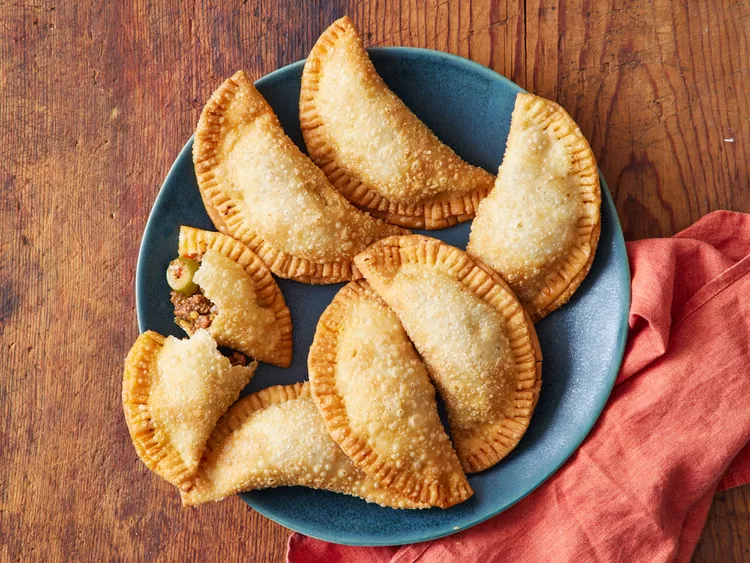

Empanada

Description
Empanada is a pastry turnover, either baked or fried, with a filling that
can be either savory or sweet. The dough and fillings vary greatly
depending on the region and cultural influences.
Ingredients
- 1 tablespoon Goya Extra Virgin Olive Oil.
- ½ pound ground beef.
- ½ medium yellow onion, finely chopped.
- ¼ cup Goya Tomato Sauce.
-
6 Goya Spanish Olives Stuffed with Minced Pimientos, thinly sliced.
- 2 tablespoons Goya Sofrito.
- 1 packet Sazon Goya with Coriander and Annatto.
- 1 teaspoon Goya Minced Garlic.
- ½ teaspoon Goya Dried Oregano.
- Goya Ground Black Pepper, to taste.
-
1 (14 ounce) package yellow or white Goya Discos empanada discs, thawed.
- 1 quart Goya Corn Oil, for frying.
Steps
- Gather the ingredients.
-
Heat olive oil in a large skillet over medium heat. Add ground beef;
cook and stir until browned and crumbly, about 10 minutes. Add onions
and cook until soft, about 5 minutes.
-
Stir in tomato sauce, olives, sofrito, sazón, garlic, oregano, and
pepper. Reduce the heat to medium-low and simmer until mixture thickens,
about 15 minutes.
-
Roll empanada disks on a lightly floured surface until 1/2 inch larger
in diameter. Spoon about 1 tablespoon meat mixture into the middle of
each disk. Moisten the disk edges with water, fold in half over filling
to form a half-moon, and pinch to seal (or seal with a fork).
-
Heat 2 1/2 inches corn oil in a deep-fryer or large saucepan to 350
degrees F (175 degrees C). Working in batches, fry empanadas until crisp
and golden brown, flipping once, 4 to 6 minutes.
Home